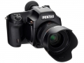
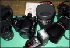

器材库 > 大中画幅可换镜头数码相机 > 645D

规格总览
产品类型
大中画幅可换镜头数码相机
发布日期
2010-03-10
厂家推荐价格
800,000.00 （日元）
影像规格
影像传感器
CCD
影像传感器尺寸
44 x 33mm
总像素
4001万
有效像素
4000万
影像处理器
PRIME II
色彩滤镜
原色滤镜
最大解像度
7264x5440
静态图像尺寸
RAW(PEF)/RAW(DNG)40MB (7264x5440) ；JPEG L 40MB (7264x5440)；M 32MB (6528x4896)、21MB (5376x4032)/S 13MB (4224x3168)、7MB (3072x2304)
静态图像格式
JPEG, RAW, RAW+JPEG
除尘系统
DR II除尘系统
镜头和对焦
镜头卡口
Pentax 645AF
兼容镜头
645AF2、645AF、645A
对焦系统类型
11点宽区SAFOX IX+对焦系统
对焦点
11点、5点、3点
对焦模式
AF（AF.S）、AF（AF.C）
自动对焦点选择
自动, 手动, 固定在中央的焦点
手动对焦
支持
曝光控制
测光系统
TTL全开光圈77区分割测光系统
测光模式
中央重点测光, 多分区评价测光, 点测光
测光范围
（55/2.8・ISO200）2-21EV
曝光模式
P（程序自动曝光）, A（光圈优先自动曝光）, S（快门速度优先自动曝光）, M（手动测光曝光）
快门类型
电子控制，纵走式，焦平面快门
快门速度
1/4000s -30s
曝光补偿
±5EV
自动曝光锁
有
ISO感光度
200, 400, 800, 1000, 可扩展至1600, 可扩展至100
白平衡
日光, 白炽灯, 闪光灯, 阴天, 荧光灯, 阴影, 自动
自拍
10秒, 2秒
连拍
1.1张/秒；RAW（PEF)+JPEG（40MB）：13张/RAW(PEF)：13张/RAW(DNG)：13张/JPEG（40MB）：15张
闪光灯
内置闪光灯
弹出式
闪光模式
自动
外接闪光灯
P-TTL
PC端子
有
取景器/显示屏
取景器
梯形五棱镜取景器
取景范围
98%
取景放大倍率
（D FA 55/2.8・∞）0.62倍 / （FA 75/2.8・∞）0.85倍
屈光度调节范围
-3.5 ～ +2.0m-1
反光镜锁定
有
LCD类型
彩色TFT LCD
LCD尺寸
3.0英寸
LCD像素
92.1万
视野率
100%
文件输入/输出
存储卡
SD/SDHC
数据接口
USB2.0
视频/音频接口
AV 输出, HDMI 输出, Video 输出 (NTSC/PAL)
电源
电池
可充电锂离子电池D-LI90
续航能力
最多约800张
机身规格
颜色
黑色
尺寸
156×117×119mm
重量
1400g
其它
配件端口
快门线
软件
PENTAX Digital Camera Utility 4 (Ver.4.20)
roc_rock2015-10-12 09:525 分
操作性 5.00功能性 5.00美观性 5.00趣味性 5.00耐用性 5.00性价比 5.00解像力 5.00色彩还原 5.00
thambar2015-06-13 09:514.94 分
操作性 5.00功能性 5.00美观性 4.50趣味性 5.00耐用性 5.00性价比 5.00解像力 5.00色彩还原 5.00
光速飞龙2014-11-04 06:475 分
操作性 5.00功能性 5.00美观性 5.00趣味性 5.00耐用性 5.00性价比 5.00解像力 5.00色彩还原 5.00
十八刀2014-10-14 09:154.75 分
操作性 5.00功能性 4.50美观性 5.00趣味性 3.50耐用性 5.00性价比 5.00解像力 5.00色彩还原 5.00
play3652014-05-19 11:255 分
操作性 5.00功能性 5.00美观性 5.00趣味性 5.00耐用性 5.00性价比 5.00解像力 5.00色彩还原 5.00
xjcan2012-08-17 01:344.56 分
操作性 4.50功能性 5.00美观性 4.50趣味性 4.50耐用性 4.00性价比 4.00解像力 5.00色彩还原 5.00

benson05262012-03-22 20:444.38 分
操作性 4.50功能性 4.00美观性 4.50趣味性 4.00耐用性 4.00性价比 5.00解像力 4.50色彩还原 4.50
mllppp2011-10-20 16:434.63 分
操作性 5.00功能性 5.00美观性 5.00趣味性 5.00耐用性 5.00性价比 3.00解像力 5.00色彩还原 4.00
老派2011-01-23 18:515 分
操作性 5.00功能性 5.00美观性 5.00趣味性 5.00耐用性 5.00性价比 5.00解像力 5.00色彩还原 5.00
fivehow2010-10-26 11:524.88 分
操作性 5.00功能性 5.00美观性 5.00趣味性 5.00耐用性 4.50性价比 5.00解像力 5.00色彩还原 4.50
三补色2010-10-10 09:584.81 分
操作性 5.00功能性 5.00美观性 5.00趣味性 5.00耐用性 4.50性价比 4.50解像力 4.50色彩还原 5.00
产品图 / 样片
评测 / 相关文章
- 详细内容 （存档）
- ［资讯］将三阳24mm移轴镜头改到宾得645D上 （存档）
- ［资讯］宾得645D被列入停产 （存档）
- ［资讯］宾得645D漆涂限量版入手开箱 （存档）
- ［试用］Pentax 645D 美西行 （存档）
- ［试用］Pentax 645D人像贴 （存档）
- ［资讯］宾得公布PENTAX 645D最新固件 （存档）
- ［资讯］用于艺术鉴定 红外中画幅相机645D IR （存档）
- ［试用］Pentax 645D:不仅仅是诱惑 （存档）
- ［资讯］日本CJPC公布2011年度相机大奖 （存档）
- ［资讯］欧洲影像大奖TIPA 2011年度获奖名单公布 （存档）
相关文章
- ［资讯］宾得645D漆涂限量版入手开箱 （存档）
- ［试用］Pentax 645D 美西行 （存档）
- ［试用］Pentax 645D人像贴 （存档）
- ［资讯］宾得公布PENTAX 645D最新固件 （存档）
- ［资讯］用于艺术鉴定 红外中画幅相机645D IR （存档）
- ［试用］Pentax 645D:不仅仅是诱惑 （存档）
- ［资讯］日本CJPC公布2011年度相机大奖 （存档）
- ［资讯］欧洲影像大奖TIPA 2011年度获奖名单公布 （存档）
- ［资讯］宾得645D/K-5固件再次升级 （原站已下线）
- ［资讯］宾得645格式镜头产品线曝光 （原站已下线）
- ［资讯］将三阳24mm移轴镜头改到宾得645D上 （存档）
- ［资讯］宾得645D被列入停产 （存档）
- ［资讯］宾得645D/K-5/K-r最新固件升级 （原站已下线）
- ［资讯］2010年无忌最具人气器材出炉 （存档）